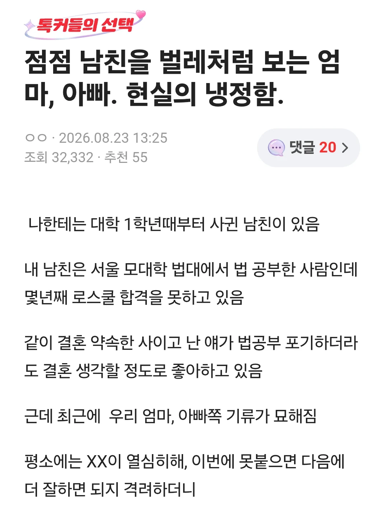

점점 남친을 벌레보듯이 보는 엄마,아빠.jpg
댓글
마저 퍼와줘
왜 말을 하다 말어
사람을 화나게하는 방법은 두가지가
5번 떨어지고 수능 다시 준비 중
격려하더니 이번에도 떨어지니까 엄마 아빠가 안경을 사오셨더라고
붐업주기 전에 빨리 수정하시오
https://www.dogdrip.net/735630643
뭔데 이거 새로운 초식임?
사람을 짜증나게 하는 방법에는 두가지가 있다.
첫번째는 말을 하다 마는 것이고
두번째는...[더보기]
2부는 유료냐..이건 유료 결제 할 정도는 아닌데
인서울 명문대는 죄다 법대 없어졌다
고로 주작이거나 떨어질 만하니 떨어지는 거
ㄹㅇㅋㅋ 법대 로스쿨로 전환한 이후 남아있는 법학과는 경찰대 법학과 말곤 다 잡대임
경찰대법학은 사실상 입학이후 전공선택이라 의미없지만 ㅋㅋㅋㅋㅋㅋㅋ
격려하더니 끝을 봤나
국토 대장정을 보내 주셨다.
ㅉㅉ
전자기기를 멀리하고
식사를 통제하고
운동량을 확보하고
수면의 질을 높혔어야지
그래도 결론은 죽던데
사람은 누구나 죽어
시발아 뒤는 ㅇㄷ있어!!!
퍼오다 말았누